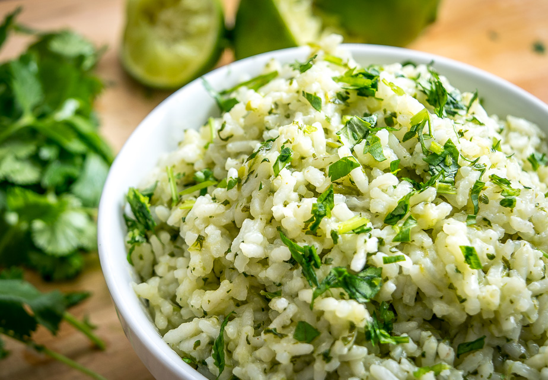
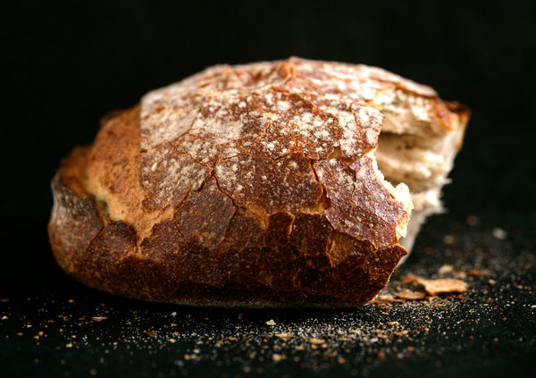

If you have a hankering for crispy on the outside, creamy on the inside, perfectly salted French Fries, then look no further. You will get addicted!
Instruction
- Take 1 extra-large waxy potato of about 315 grams. Rinse well in water and then peel the potato (optional).
- Now slice the potato in slices having 1 cm thickness.
- Cut the potatoes in sticks having 1 cm width.
- Rinse these potato sticks for a couple of times in water. Add the rinsed potatoes to a bowl and submerge them in cold water for 30-45 minutes to remove extra starch. After 30 minutes or 45 minutes, drain the potatoes in a colander.
- Rinse the potatoes with running water. Drain all the extra water. Place the potatoes on a clean napkin.
- Fold the napkin over to press, pat and dry the potatoes. The potatoes have to be completely dried before you begin to fry them.
- Heat oil in a wok or pan. Put the pottoes into the oil and stirr from time to time. After 3-4 min the fries are ready and should not be brown on the outside.
- Take the fries out of the oil and put them for a while on a kitchen napkin. Put a sufficient amount of salt on them. Ready!
Ingredients
Amount |
Ingredients |
|---|---|
| 300-400g | Waxy Potatoes |
| 500 ml | Oil |
| A Fair Amount | Salt |

A moderately easy side dish that pairs well with meat, but also fish. The herbs and a piece of lime fruit additionally pleases the eyes! You'll love it!
Instruction
- Combine rice and chicken broth in a pen and bring it to boil.
- Reduce the heat and simmer it about 15 min. Watch out that the rice absorbes the broth and becomes tender.
- Add lime juice, cilantro and nutmeg; fluff with a fork.
- Fill it in a bowl and keep it warm. Ready!.
Ingredients
Amount |
Ingredients |
|---|---|
| 1 cup | Uncooked Jasmine Rice |
| 2 cups | Reduced Chicken Broth |
| 2 tablespoons | Lime Juice |
| 2 tablespoons | Fresh Cilantro |
| 1/8 tablespoon | Ground Nutmeg |

Dreaming of crispy, golden oven roasted potatoes, like you saw on the TV-show? Now you can eat them in your very own home! Go for it!
Instruction
- To make the roasted potatoes, peel the skin off and cut them into your preferred size, placing them in the bowl of water once cut. Then, rinse and drain the potatoes once again and put them into a clean bowl.
- Sprinkle a few pinches of fine salt over the potatoes, rubbing it over them really well, mixing it through using your hands.
- Transfer the potatoes into an oven safe baking tray and spread them out, before adding a few short rosemary stalks and garlic cloves (with the skin still on, making a small slit with a knife).
- Braise the roasted potatoes at a medium heat on the stove top, mixing and turning them with a fork every so often, for up to 15 minutes.
- Place the braised potatoes in the oven to cook for up to 30 minutes or until they are crispy and golden.
- Once the roasted potatoes are cooked, remove them from the oven.
- Enjoy, and feel like home!
Ingredients
Amount |
Ingredients |
|---|---|
| 6 Large | Potatoes |
| Enough | Salt |
| A bundle | Rosmary |
| Up to taste | Garlic |
| Some | Virgin Olive Oil |

This easy homemade French bread recipe is sure to be a hit! Just a few hours – no overnight rise. Crispy crust on the outside and soft, airy bread on the inside! It will enter your dreams!
Instruction
- Mix the dough. This is a very slack dough (also known as a wet or sticky dough)! The dough will be shaggy and somewhat sticky, but it will smooth out as the gluten develops while it rises and again when it’s time to shape.
- Let the dough rise (1 hour) Kick back, relax, and let your dough do it’s thing!
- Shape the dough (5 minutes) Lightly flour a cutting board, tip the dough out, and gently form it into a round loaf (watch the videos below to see exactly how we do this!)
- Let the dough rise one final time (30 minutes) When your dough is shaped, pop it into a medium-sized bowl or proofing basket to rise for 30 minutes while you preheat the oven.
- Bake (45 minutes) Carefully transfer the bread to your preheated Dutch oven (or use an alternative method!) I like to use a piece of parchment paper to make it easier to lift the bread in and out of the pot. Bake for 30 minutes with the lid on, then remove the lid and bake another 10-15 minutes to help the bread develop more color.
- Let the bread cool, slice, and enjoy!
Ingredients
Amount |
Ingredients |
|---|---|
| 9g | Active Dry Yeast |
| 4g | Sugar |
| 300g | Warm Water |
| 10g | Salt |
| 400g | Flour |